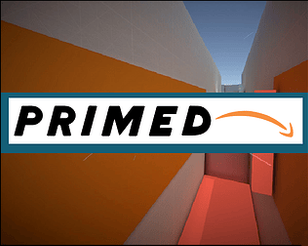
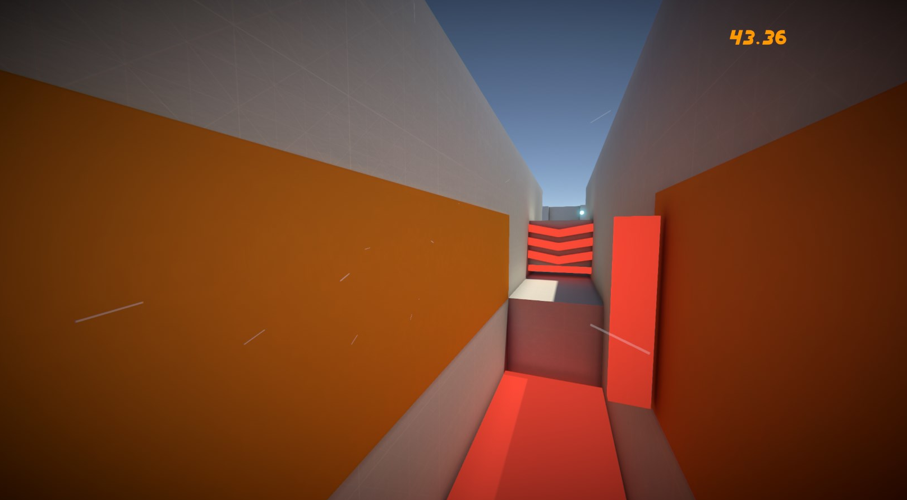

[The Web GL version lacks audio, please download an executable. or use the alt webGL build] https://issuetracker.unity3d.com/issues/audio-no-longer-plays-in-build
An alternative web GL build is available, but was uploaded minutes after the deadline.
https://illogicaldesigns.itch.io/primed-webgl-sound
In the future Prime runners take on a dangerous role to deliver your packages in record time. You have heard of two day delivery and two hour delivery, what about 2 minute delivery. Using cutting edge moves these runners navigate a dense and sprawling city to delivery the packages, competing against other runners to secure each job. Enter the simulator and prepare for the real world. See if you can get your runs on the leader-boards.
To keep with the theme of the jam, "less is more", I focused on one thing and one thing only. Running fast, with simple graphics, simple mechanics, and singular focus.
